Example usage
[34]:
import sys
!{sys.executable} -m pip install biosonic[praat]
zsh:1: no matches found: biosonic[praat]
[35]:
from biosonic import handle, plot, compute, filter
Read file and plot spectrogram
[36]:
data_folder = "./example_data/"
[37]:
data, sr, n_ch, quant = handle.read_wav(data_folder+"GT00024_G00219_Dagobert_distance.wav")
print(f"sampling rate: {sr}, number of channels: {n_ch}, quantization: {quant}")
sampling rate: 44100, number of channels: 1, quantization: float32
[38]:
WINDOW_LENGTH = 512
DYNAMIC_RANGE = 70
plot.plot_spectrogram(data, sr=sr, window_length=WINDOW_LENGTH, overlap=95, dynamic_range=DYNAMIC_RANGE)
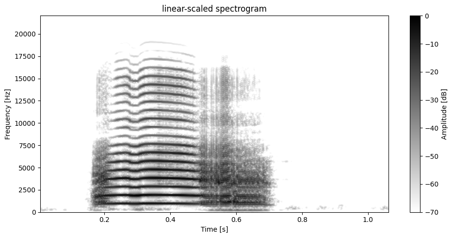
[38]:
(<Figure size 1000x500 with 2 Axes>,
<Axes: title={'center': 'linear-scaled spectrogram'}, xlabel='Time [s]', ylabel='Frequency [Hz]'>)
[39]:
import numpy as np
import matplotlib.pyplot as plt
hz = np.linspace(0, 22000, 1000)
mel= compute.utils.hz_to_mel(hz, corner_frequency=1000)
plt.plot(hz, mel, label="1000")
mel= compute.utils.hz_to_mel(hz, corner_frequency=500)
plt.plot(hz, mel, label="500")
mel= compute.utils.hz_to_mel(hz, corner_frequency=3000)
plt.plot(hz, mel, label="3000")
plt.legend()
plt.xlabel("Frequency (Hz)")
plt.ylabel("Mel")
plt.show()
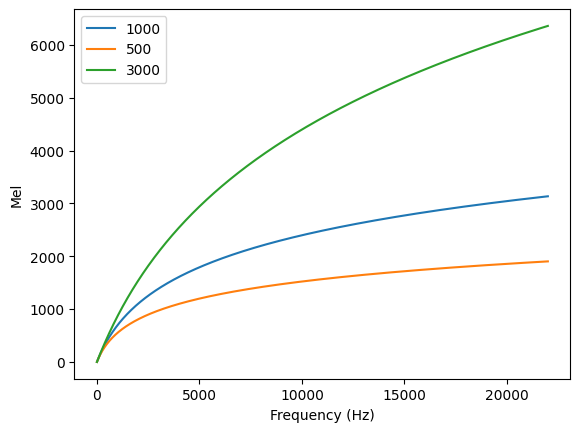
[40]:
plot.plot_spectrogram(data, sr=sr, window_length=WINDOW_LENGTH, overlap=95, dynamic_range=DYNAMIC_RANGE, freq_scale="mel", n_bands=40)
plot.plot_spectrogram(data, sr=sr, window_length=WINDOW_LENGTH, overlap=95, dynamic_range=DYNAMIC_RANGE, freq_scale="mel", n_bands=128, corner_frequency=5000)
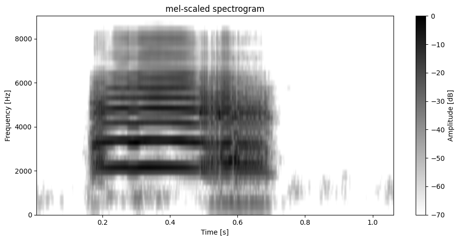
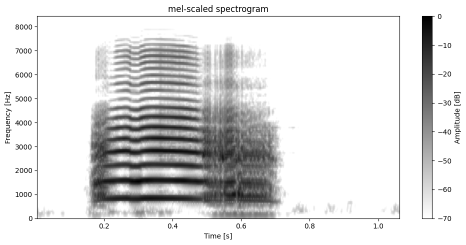
[40]:
(<Figure size 1000x500 with 2 Axes>,
<Axes: title={'center': 'mel-scaled spectrogram'}, xlabel='Time [s]', ylabel='Frequency [Hz]'>)
[41]:
# import librosa
# S = librosa.feature.melspectrogram(y=data, sr=sr, n_fft=WINDOW_LENGTH, n_mels=128)
# fig, ax = plt.subplots()
# S_dB = librosa.power_to_db(S, ref=np.max)
# img = librosa.display.specshow(S_dB, x_axis='time',
# y_axis='mel', sr=sr, ax=ax, cmap="binary")
# fig.colorbar(img, ax=ax, format='%+2.0f dB')
# ax.set(title='Mel-frequency spectrogram')
[42]:
plot.plot_spectrogram(data, sr=sr, window_length=WINDOW_LENGTH, overlap=95, dynamic_range=DYNAMIC_RANGE, freq_scale="log")
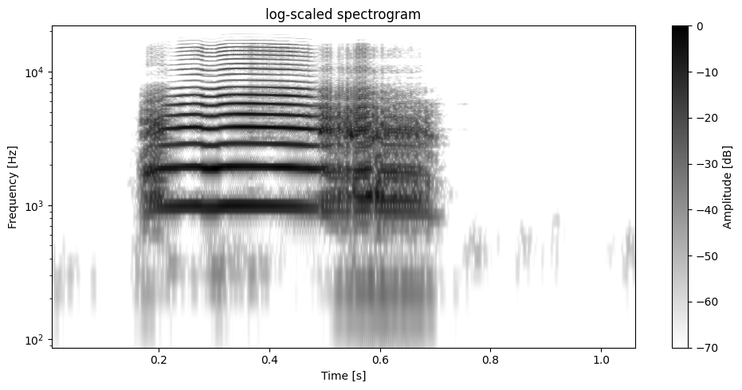
[42]:
(<Figure size 1000x500 with 2 Axes>,
<Axes: title={'center': 'log-scaled spectrogram'}, xlabel='Time [s]', ylabel='Frequency [Hz]'>)
Cepstrum and cepstral coefficients
[43]:
ceps = compute.spectrotemporal.cepstrum(data, sr)
plot.plot_cepstrum(data, sr, max_quefrency=1/500, min_quefrency=1/5000)
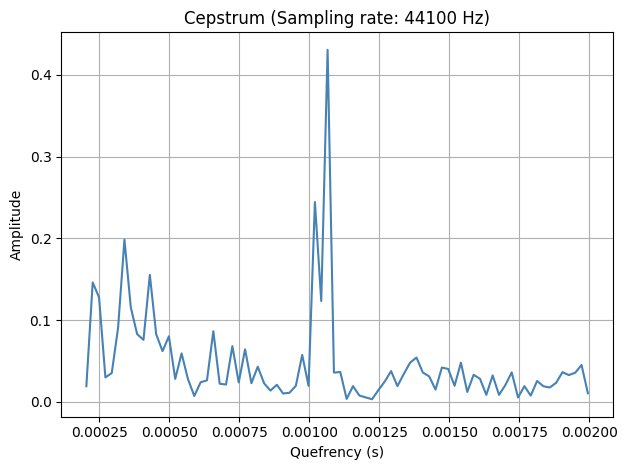
[44]:
plot.plot_cepstral_coefficients(data, sr, WINDOW_LENGTH, filterbank_type="log", n_ceps=18, fmin=2000)
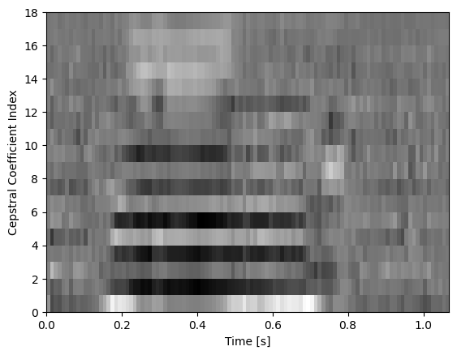
[45]:
plot.plot_cepstral_coefficients(data, sr, WINDOW_LENGTH, filterbank_type="linear", n_ceps=18, fmin=2000)
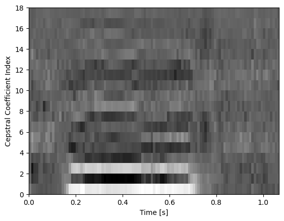
[46]:
plot.plot_cepstral_coefficients(data, sr, WINDOW_LENGTH, filterbank_type="mel", n_ceps=18, fmin=2000)
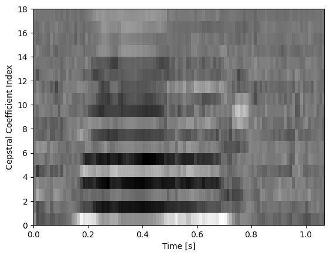
[47]:
from scipy.signal import sawtooth
perios_s = 1
times = np.linspace(0, perios_s, perios_s * 44100)
f_Hz = 50
# sine_w = np.sin(2 * np.pi * f_Hz * times) + np.sin(2 * np.pi * f_Hz*2 * times)
saw = sawtooth(2 * np.pi * f_Hz * times)
# plt.plot(times, sine_w)
# plt.show()
plot.plot_cepstrum(saw, sr, min_quefrency=1/500, max_quefrency=1/30)
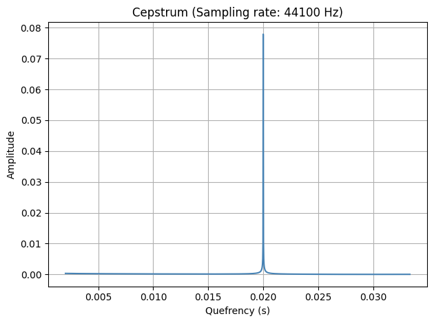
Filter signal
[48]:
data, sr, n_ch, quant = handle.read_wav(data_folder+"/201.wav")
print(f"sampling rate: {sr}, number of channels: {n_ch}, quantization: {quant}")
plot.plot_spectrogram(data, sr, dynamic_range=DYNAMIC_RANGE)
sampling rate: 44100, number of channels: 1, quantization: float32
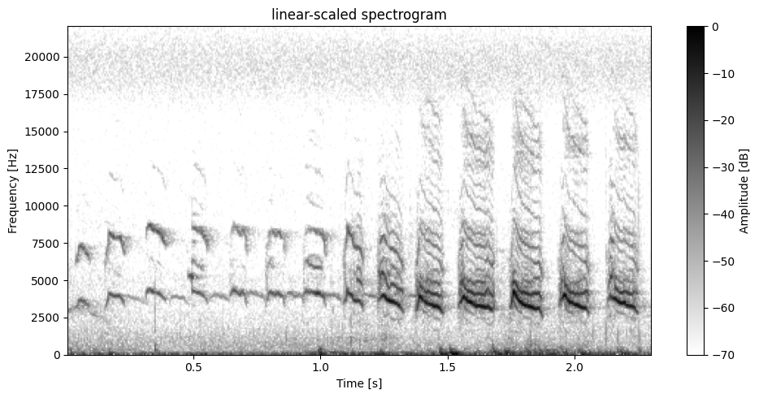
[48]:
(<Figure size 1000x500 with 2 Axes>,
<Axes: title={'center': 'linear-scaled spectrogram'}, xlabel='Time [s]', ylabel='Frequency [Hz]'>)
[49]:
x_filtered = filter.filter(data, sr, f_cutoff=2500, type="highpass")
plot.plot_spectrogram(x_filtered, sr, dynamic_range=DYNAMIC_RANGE)
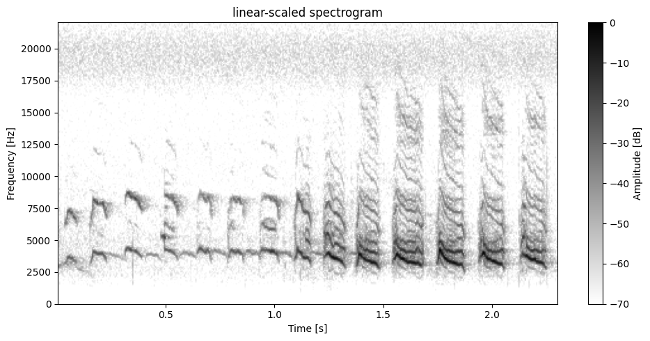
[49]:
(<Figure size 1000x500 with 2 Axes>,
<Axes: title={'center': 'linear-scaled spectrogram'}, xlabel='Time [s]', ylabel='Frequency [Hz]'>)
[50]:
# change order for steeper frequency cutoff
x_filtered = filter.filter(x_filtered, sr, f_cutoff=17500, type="lowpass", order=4)
plot.plot_spectrogram(x_filtered, sr, dynamic_range=DYNAMIC_RANGE)
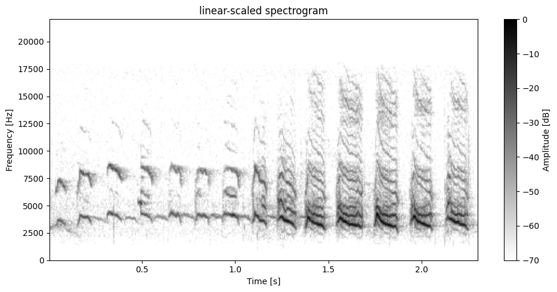
[50]:
(<Figure size 1000x500 with 2 Axes>,
<Axes: title={'center': 'linear-scaled spectrogram'}, xlabel='Time [s]', ylabel='Frequency [Hz]'>)
Pitch tracking
[51]:
# praat autocorrelation pitch tracking
time_points, candidates ,_ ,_= compute.pitch.boersma(x_filtered, sr, min_pitch=2000, max_pitch=6000, voicing_thresh=.3, timestep=0.02, octave_cost=0.03, silence_thresh=0.05, plot=True, window_length=WINDOW_LENGTH, overlap=95, flim=(0,17000), dynamic_range=DYNAMIC_RANGE)
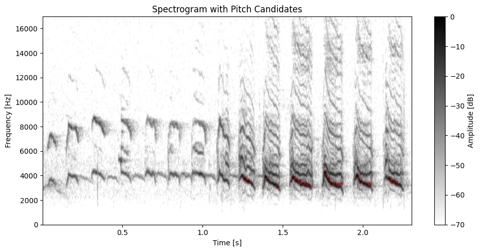
Audio feature extraction
[52]:
features = compute.utils.extract_all_features(x_filtered, sr, min_prominence=0.7, noise_threshold=0.5, plot=True, envelope_kwargs={"silence_threshold": 0.05}, spec_kwargs={"dynamic_range": DYNAMIC_RANGE}) # lower resolution for dom freqs?
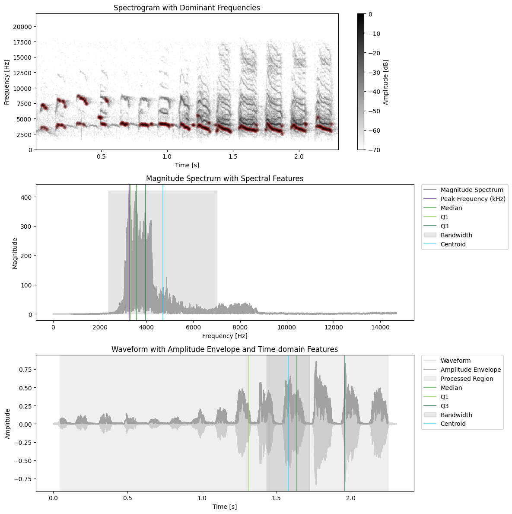
[53]:
x2, sr2, _, _ = handle.read_wav(data_folder+"GT00024_G00219_Dagobert_distance.wav")
features = compute.utils.extract_all_features(x2, sr2, min_prominence=0.7, noise_threshold=0.5, plot=True, envelope_kwargs={"silence_threshold": 0.01}, spec_kwargs={"dynamic_range": DYNAMIC_RANGE}) # lower resolution for dom freqs?
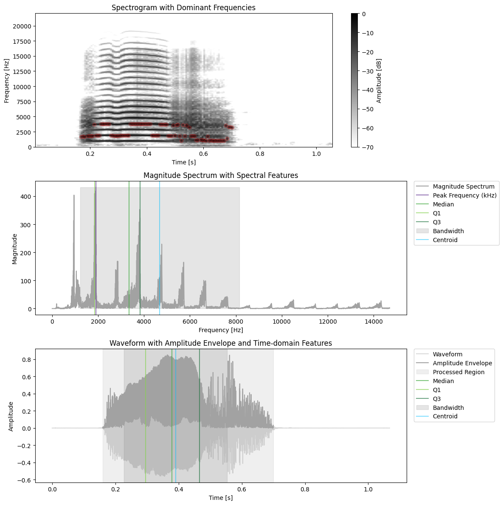
[ ]:
features
{'t_q1': 0.13582766439909297,
't_median': 0.21848072562358276,
't_q3': 0.3056689342403628,
'temporal_centroid': np.float64(0.390789263881122),
'temporal_sd': 0.16312278807163239,
'temporal_skew': 1.1527855396270752,
'temporal_kurtosis': 1.427086353302002,
'amplitude_envelope': array([0.01064709, 0.00333164, 0.0036631 , ..., 0.02279189, 0.01959393,
0.01777992], shape=(23814,), dtype=float32),
'duration': 0.54,
'temporal_entropy': 5.1806151021833085,
'trim_indices': (7056, 30870),
'trim_times': (0.16, 0.7),
'fq_q1': np.float64(1859.7795850763384),
'fq_median': np.float64(3345.9176523050137),
'fq_q3': np.float64(3821.631665003292),
'spectral_flatness': np.float32(0.00090685516),
'spectral_centroid': np.float64(4687.6186591089645),
'spectral_sd': np.float64(3471.778381314025),
'spectral_skew': np.float64(1.5079534767972311),
'spectral_kurtosis': np.float64(4.963427221706459),
'peak_frequency': 1904.7289406068844,
'pse': 0.6840756522188091,
'spectrotemporal_entropy': 2.6155203100838933,
'dominant_freqs': array([ nan, nan, nan, nan,
nan, nan, nan, nan,
nan, nan, nan, nan,
nan, nan, nan, nan,
nan, nan, nan, nan,
nan, nan, nan, nan,
nan, nan, nan, nan,
1636.5234375, 1722.65625 , 1636.5234375, nan,
1808.7890625, 1808.7890625, 1808.7890625, 1808.7890625,
3703.7109375, 1894.921875 , 1894.921875 , 1894.921875 ,
3789.84375 , 3789.84375 , 3789.84375 , 3789.84375 ,
3789.84375 , 3789.84375 , 1894.921875 , 1894.921875 ,
1808.7890625, 1808.7890625, 1808.7890625, 1808.7890625,
1894.921875 , 1894.921875 , 1894.921875 , 1894.921875 ,
1894.921875 , 1894.921875 , 3789.84375 , 3789.84375 ,
3789.84375 , 3789.84375 , 3789.84375 , 3789.84375 ,
3789.84375 , 3789.84375 , 3789.84375 , 3789.84375 ,
3789.84375 , 3789.84375 , 3789.84375 , 1894.921875 ,
1894.921875 , 1894.921875 , 1894.921875 , 1894.921875 ,
3703.7109375, 3703.7109375, 3703.7109375, 3703.7109375,
3703.7109375, 1808.7890625, 1808.7890625, 1808.7890625,
3531.4453125, 1894.921875 , 3617.578125 , 3703.7109375,
1808.7890625, 1033.59375 , 3617.578125 , 1808.7890625,
3531.4453125, nan, 3186.9140625, 1808.7890625,
1808.7890625, 1808.7890625, 1119.7265625, 1119.7265625,
nan, 1205.859375 , 1119.7265625, 1119.7265625,
1033.59375 , 1722.65625 , 1033.59375 , 1119.7265625,
1033.59375 , 1033.59375 , 1033.59375 , 1033.59375 ,
1033.59375 , 1033.59375 , 1033.59375 , 1033.59375 ,
3531.4453125, 1378.125 , 3273.046875 , 3273.046875 ,
3186.9140625, nan, nan, nan,
nan, nan, nan, nan,
nan, nan, nan, nan,
nan, nan, nan, nan,
nan, nan, nan, nan,
nan, nan, nan, nan,
nan, nan, nan, nan,
nan, nan, nan, nan,
nan, nan, nan, nan,
nan, nan, nan, nan,
nan, nan, nan, nan,
nan, nan, nan, nan,
nan, nan, nan, nan,
nan, nan, nan, nan,
nan, nan, nan, nan,
nan, nan]),
'mean_dom': np.float64(2401.19140625),
'min_dom': 1033.59375,
'max_dom': 3789.84375,
'range_dom': 2756.25,
'mod_dom': np.float64(14.625)}
[ ]:
features = compute.utils.extract_all_features(
x_filtered,
sr,
min_prominence=0.7, # for dominant frequencies
noise_threshold=0.3, # for dominant frequencies
plot=True,
spec_kwargs={"dynamic_range": DYNAMIC_RANGE},
envelope_kwargs={"silence_threshold": 0.02}
)
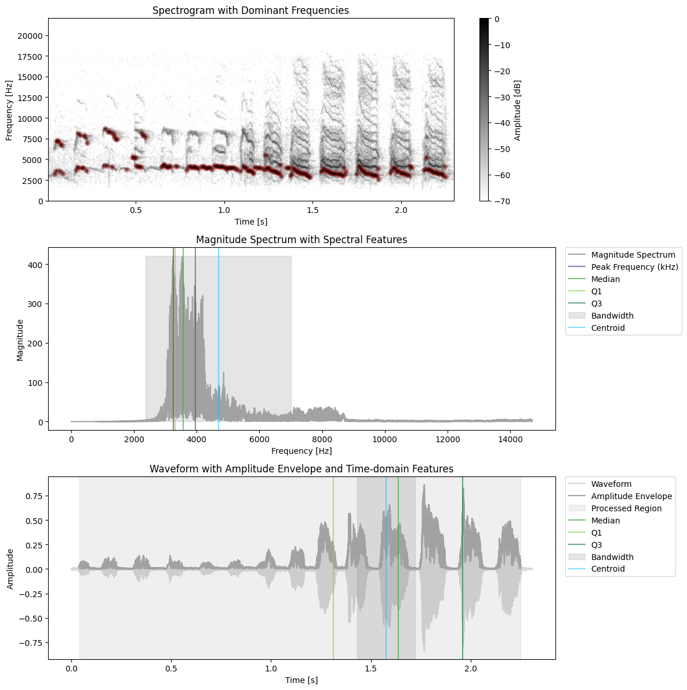
Batch normalize files in a folder and export features as csv
[56]:
handle.batch_normalize_wav_files(data_folder, 44100, 1, "float32")
Normalized: 307.wav -> example_data/normalized/307.wav
Normalized: GT00025_G00220_Jafar_distance.wav -> example_data/normalized/GT00025_G00220_Jafar_distance.wav
Normalized: GT00024_G00219_Dagobert_distance.wav -> example_data/normalized/GT00024_G00219_Dagobert_distance.wav
Normalized: 201.wav -> example_data/normalized/201.wav
[57]:
features_df = handle.batch_extract_features(data_folder+"/normalized", save_csv_path="extracted_features.csv")
processing 307.wav
processing GT00025_G00220_Jafar_distance.wav
processing GT00024_G00219_Dagobert_distance.wav
processing 201.wav
Features saved to: example_data/normalized/extracted_features.csv
[58]:
features_df
[58]:
| t_q1 | t_median | t_q3 | temporal_centroid | temporal_sd | temporal_skew | temporal_kurtosis | amplitude_envelope | duration | temporal_entropy | ... | peak_frequency | pse | spectrotemporal_entropy | dominant_freqs | mean_dom | min_dom | max_dom | range_dom | mod_dom | filename | |
|---|---|---|---|---|---|---|---|---|---|---|---|---|---|---|---|---|---|---|---|---|---|
| 0 | 0.599138 | 0.817007 | 1.027755 | 0.798286 | 0.179693 | 1.242795 | 0.902818 | [0.061606277, 0.040474925, 0.045253057, 0.0359... | 1.370091 | 5.362802 | ... | 64.959203 | 0.773999 | 4.150805 | [86.1328125, 86.1328125, nan, nan, nan, 172.26... | 3016.823509 | 86.132812 | 6546.093750 | 6459.960938 | 26.866667 | 307.wav |
| 1 | 0.448503 | 0.618821 | 0.762358 | 0.596139 | 0.088544 | 0.675405 | -0.359208 | [1.8862542e-06, 1.0176342e-05, 1.6869204e-06, ... | 1.242245 | 4.241841 | ... | 1334.680467 | 0.457769 | 1.941783 | [nan, nan, nan, nan, nan, nan, nan, nan, nan, ... | 1496.796875 | 947.460938 | 3789.843750 | 2842.382812 | 10.272727 | GT00025_G00220_Jafar_distance.wav |
| 2 | 0.295850 | 0.378707 | 0.466259 | 0.391255 | 0.156971 | 1.738432 | 3.013786 | [0.0006397646, 0.00046644738, 0.00043387563, 0... | 1.067868 | 3.823437 | ... | 1904.728941 | 0.684076 | 2.615520 | [nan, nan, nan, nan, nan, nan, nan, nan, nan, ... | 2371.343994 | 775.195312 | 3789.843750 | 3014.648438 | 17.371429 | GT00024_G00219_Dagobert_distance.wav |
| 3 | 1.289433 | 1.607664 | 1.873061 | 1.533700 | 0.172134 | 1.484269 | 1.465645 | [0.06589466, 0.046111397, 0.04067738, 0.040626... | 2.307528 | 5.463995 | ... | 45.936597 | 0.719736 | 3.932635 | [2928.515625, 344.53125, nan, nan, 86.1328125,... | 2844.820534 | 86.132812 | 8699.414062 | 8613.281250 | 42.490000 | 201.wav |
4 rows × 28 columns
Parse praat TextGrids and extract segments from file
This relies on the praat-textgrids library written by Tommi Nieminen:
https://github.com/Legisign/Praat-textgrids
[59]:
data, sr, _, _ = handle.read_wav(data_folder+"/201.wav", n_channels=1)
[60]:
# get boundaries and plot
segments = handle.boundaries_from_textgrid(data_folder+"/201.TextGrid", tier_name="segments")
[61]:
segments
[61]:
[{'label': '1', 'begin': 0.03192743764172336, 'end': 0.09225804535141492},
{'label': '2', 'begin': 0.14802721088435375, 'end': 0.22507401889130346},
{'label': '3', 'begin': 0.3076643990929705, 'end': 0.3885398324788586},
{'label': '4', 'begin': 0.47020408163265304, 'end': 0.5659863945578232},
{'label': '5', 'begin': 0.6443537414965986, 'end': 0.7140136054421768},
{'label': '6', 'begin': 0.7923809523809524, 'end': 0.8591383219954648},
{'label': '7', 'begin': 0.9346031746031747, 'end': 1.0199265374607902},
{'label': '8', 'begin': 1.08843537414966, 'end': 1.1690890923594341},
{'label': '9', 'begin': 1.224258804445234, 'end': 1.3284682606073004},
{'label': '10', 'begin': 1.3754646820137224, 'end': 1.4858041061853222},
{'label': '11', 'begin': 1.5430171409409665, 'end': 1.6880930504999216},
{'label': '12', 'begin': 1.7432627625857215, 'end': 1.8781220587954544},
{'label': '13', 'begin': 1.933061224489796, 'end': 2.072380952380952},
{'label': '14', 'begin': 2.124625850340136, 'end': 2.2500067847071428}]
[62]:
plot.plot_boundaries_on_spectrogram(data, sr, segments, dynamic_range=DYNAMIC_RANGE)
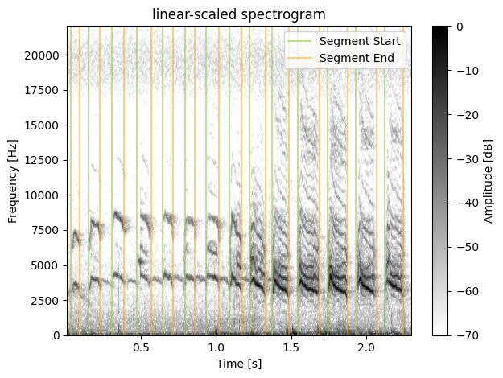
[63]:
# or extract signal segments directly
audio_segments = handle.audio_segments_from_textgrid(data, sr, data_folder+"/201.TextGrid", tier_name="segments", dynamic_range=DYNAMIC_RANGE)

[64]:
audio_segments
[64]:
| waveform | label | sr | filename | |
|---|---|---|---|---|
| 0 | [0.025147252, 0.018524736, 0.026093327, 0.0258... | 1 | 44100 | 201.TextGrid |
| 1 | [0.020172736, 0.015442366, 0.020172736, 0.0142... | 2 | 44100 | 201.TextGrid |
| 2 | [-0.054597612, -0.057924133, -0.058381908, -0.... | 3 | 44100 | 201.TextGrid |
| 3 | [0.032258064, 0.029877622, 0.025849178, 0.0291... | 4 | 44100 | 201.TextGrid |
| 4 | [0.045014802, 0.053559985, 0.04809717, 0.04147... | 5 | 44100 | 201.TextGrid |
| 5 | [-0.0018311106, -0.0053712577, -0.021454513, -... | 6 | 44100 | 201.TextGrid |
| 6 | [0.005279702, 0.0128482925, 0.011902219, 0.008... | 7 | 44100 | 201.TextGrid |
| 7 | [0.09707938, 0.09140293, 0.09353923, 0.0873744... | 8 | 44100 | 201.TextGrid |
| 8 | [-0.09341716, -0.08297983, -0.077547535, -0.06... | 9 | 44100 | 201.TextGrid |
| 9 | [-0.047029022, -0.043946654, -0.034943692, -0.... | 10 | 44100 | 201.TextGrid |
| 10 | [0.02255318, 0.029175695, 0.027527696, 0.01806... | 11 | 44100 | 201.TextGrid |
| 11 | [-0.030945769, -0.036378063, -0.045381024, -0.... | 12 | 44100 | 201.TextGrid |
| 12 | [-0.030457472, -0.029267251, -0.027161473, -0.... | 13 | 44100 | 201.TextGrid |
| 13 | [-0.05056917, -0.040864285, -0.026673177, -0.0... | 14 | 44100 | 201.TextGrid |
[65]:
plot.plot_spectrogram_catalogue(audio_segments, "label", ncols=4, dynamic_range=DYNAMIC_RANGE)
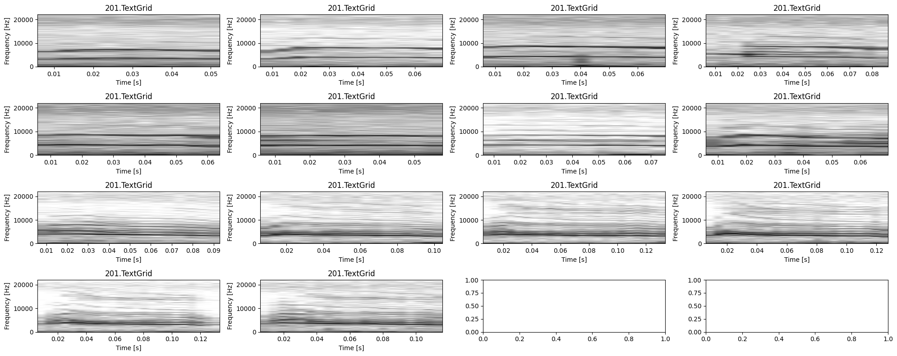
[66]:
audio_segments['spectrogram'] = audio_segments.apply(
lambda row: compute.utils.transform_spectrogram_for_nn(
data=row['waveform'],
sr=row['sr'],
values_type='float32',
f_min = 1500,
f_max = 15000,
window_length = WINDOW_LENGTH,
resize=(128, 128)
),
axis=1
)
audio_segments.head()
[66]:
| waveform | label | sr | filename | spectrogram | |
|---|---|---|---|---|---|
| 0 | [0.025147252, 0.018524736, 0.026093327, 0.0258... | 1 | 44100 | 201.TextGrid | [[[0.011764807, 0.0122770015, 0.012789195, 0.0... |
| 1 | [0.020172736, 0.015442366, 0.020172736, 0.0142... | 2 | 44100 | 201.TextGrid | [[[0.009059372, 0.009443475, 0.0098275775, 0.0... |
| 2 | [-0.054597612, -0.057924133, -0.058381908, -0.... | 3 | 44100 | 201.TextGrid | [[[0.009791163, 0.010417299, 0.011043437, 0.01... |
| 3 | [0.032258064, 0.029877622, 0.025849178, 0.0291... | 4 | 44100 | 201.TextGrid | [[[0.003403876, 0.005097091, 0.006790307, 0.00... |
| 4 | [0.045014802, 0.053559985, 0.04809717, 0.04147... | 5 | 44100 | 201.TextGrid | [[[0.026451806, 0.024625745, 0.022799686, 0.02... |
[67]:
n_cols = 3
n_rows = (len(audio_segments) + n_cols - 1) // n_cols
fig, axes = plt.subplots(nrows=n_rows, ncols=n_cols, figsize=(n_cols*3, n_rows*3))
axes = axes.flatten()
for i, (ax, spec) in enumerate(zip(axes, audio_segments['spectrogram'])):
if spec.ndim == 3:
spec_to_plot = spec[0]
else:
spec_to_plot = spec
ax.imshow(spec_to_plot, origin='lower', aspect='auto', cmap='binary')
ax.axis("off")
ax.set_title(f"{audio_segments.iloc[i]['label']} - {audio_segments.iloc[i]['filename']}", fontsize=10)
for ax in axes[len(audio_segments):]:
ax.axis("off")
plt.tight_layout()
plt.show()

Read all files in a folder into DataFrame and plot spectrogram catalogue
[68]:
df = handle.batch_read_files_to_df(data_folder+"/normalized")
df.head()
processing 307.wav
processing GT00025_G00220_Jafar_distance.wav
processing GT00024_G00219_Dagobert_distance.wav
processing 201.wav
[68]:
| filename | sr | waveform | |
|---|---|---|---|
| 0 | 307.wav | 44100 | [-0.027924437, -0.019623403, -0.021851253, -0.... |
| 1 | GT00025_G00220_Jafar_distance.wav | 44100 | [0.0, 0.0, 0.0, 0.0, 0.0, 0.0, 0.0, 0.0, 0.0, ... |
| 2 | GT00024_G00219_Dagobert_distance.wav | 44100 | [-0.00048829615, -0.00045777764, -0.0004272591... |
| 3 | 201.wav | 44100 | [-0.01861629, -0.019348735, -0.013183996, -0.0... |
[69]:
plot.plot_spectrogram_catalogue(df, "waveform", ncols=5, per_page=25, title_columns=["filename", "sr"], dynamic_range=55)
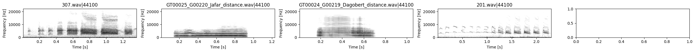
Future
Tokuda NLM
Yin pitch tracking + Pitch tracking wrapper
modulation spectra
event detection/segmentation
different noise reduction approaches
dt(f)w
autocorrelation + crosscorr
spectral flux